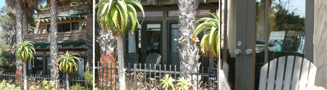

Hound Dog in Venice
Sent: Wed, Aug 19, 2009
Subject: jerry leiber's house in venice
folks -
i just got done reading the new leiber and stoller autobiography - a great, quick read - and at the end jerry leiber extolls about his venice beach house:
Hound Dog
Jerry Leiber and Mike Stoller 2009
My Greene and Greene-styled house on Venice Beach takes me back to...the beginning of my life.
You might remember...a grade-school teacher took me on a tour in Pasadena of the Gamble House, designed by Greene and Greene. This made an impression on me as the greatest example of Craftsman architecture.
I swore that if I ever had the means, I would build a monument of my own dedicated to the Greene and Greene style. Well, the monument is built. It took four years. It took special builders and special
materials; it took a singular vision to replicate the moldings and staircases, the thousands of details that give the place its signature aesthetic.
I sit here watching the endless parade of life on the promenade just outside my door...
--
do any of you know exactly where his house is? i know he often frequents the venice farmer's market on friday's. is it the house we kindly refer to as 'the jurassic park house' south of south venice blvd?
please let me know if you can help. thanks -
paul
--
Try Pat Hartman...?
-T
--
Never heard of it.
- Elayne
--
There's an amazing craftsman on Ocean Front Walk--south of Muscle Beach. It's all wood--and surrounded by a jungle of plants. If that isn't it, it should be.
- Stephen
--
Yes, I believe you're right!
So today I was biking by this supposed 'Jurassic Park' house, and I slowed down and took a closer look. All the right architectural ingredients were there, with a great stained-glass front door, overhang balustrades or whatever, and lots of plants overtaking the whole place. It was truly a glorious Craftsman house.
The entrance is on the side walkstreet and there's parking for 2 cars right off Speedway. I checked out the mailbox, to see if there was any return or in-coming address information, but it was vacant. I peered into the garage windows after I had noticed, I thought, someone moving in the distant background. There was another car parked in the 2-car garage, with a view from Speedway, through the garage, into the kitchen and out through the rest of the house to the west end, the ocean front walk. I saw somebody walking around, and decided to split. I then checked out the side yard on the south side of the house. It was pretty visible also from Speedway, through the fence, and all it was was a grassy yard, looking like it was hardly ever used, surrounded again by lush foliage. Lotsa nice jungle.
Back again past the front gate, all nicely traditional craftsman-stylish locks, which looked like I could easily broach them and walk up to the front door. If I wanted to. Just push the intercom button and say, "Hey, is this Jerry Leiber's house? I sure hope so, cuz I dug your book, which you signed for me for my birthday just a couple days ago and I just want to congratulate you on an amazing life." And then I'd hope for some kind of response, like "Hey, kid, get outta here, ya punk..." so I could respond, "But Jerry, why Venice? Why did Greene and Greene get you so bad? And what made you settle down here? See, I'm a local historian and I want to do my next article on you..." Yeah, sure.
So I return to the bike path, glancing over my left shoulder, looking up at the second floor, at the wood-shuttered twin-octagonal windows, at the rooftop cupola and the closed-up feeling I'm getting overall. This might be the place. Maybe yes, maybe no...
I go about my business, stop off at the Venice pier to watch the surfers like I usually do on my way home, and then once again slowed down when I get to "the house." The front of the house is actually visible, if you take the time to look, and I was just slowly cruising by on my bike, taking a look.

Holy s---, the front window was open, on the west side of the northwest corner of the house. You could see in. Oh my God, there's a grand piano just inside the window. What the f---, sitting on the piano is THE PICTURE, the one from page 113 of the book, with Mike and Jerry surrounding Elvis, Culver City, California, 1957, while Elvis concernedly studies the sheet music for, it looks like Jailhouse Rock, which they had written. Or, some other cuss-word here, also the photo of Bill Clinton with Mike and Jerry at the Oval office, 1993, page 286, with Bill joyfully studying some other sheet music labeled 'Elvis Presley sings Leiber & Stoller' which features THE PICTURE once again on the cover. Right there on the cover a book of sheet music, 'Elvis Presley sings Leiber & Stoller. Who else would display this prominent photo on their piano? In full view of the public?
Yep, I was convinced this was the place. The home of Jerry Leiber, another famous Venetian. I'd heard signs of him locally long ago, and of course his recent book-signing at Equator Books -- thanks Jennifer & Bob for the gift - with co-author Mike Stoller -- who I actually dig better after reading the book because of his great tunes - now all seemed to make sense.
I don't know, but I got the impression from reading their combined autobiography that Jerry was kind of a wise-ass all along. He was the swingin' Dean Martin of this duo. He had finagled his way up from a Polish and Italian neighborhood in Baltimore to become one of the first creators of "rock & roll," and, boy, did he ever.
It took Mike and Jerry, two white teenagers from the Fairfax district, together to write and produce the basic black soundtrack that we, today, know as the early days of rock & roll. Together, this team, originally forming in 1950, became magic, scribing original blues compositions, from 'Hard Times' recorded by Charles Brown in 1952 -- their first real hit -- through 'Kansas City' by Wilbert Harrison, to 'Hound Dog,' recorded first in 1953 by Big Mama Thornton, and then made eternally famous three years later by Elvis Presley. Why heck, they wrote 10 hit singles in 1959 alone. They had the knack to create what they saw as their vision of what 'blues' -- which mutated into rock & roll -- should and would become. Who knew two white Jewish kids would affect the American musical landscape of the 50s in such a huge way? Jerry was there, trying to produce what he saw as his -- and their -- vision of how this new musical era should sound. He was the crackpot, who wanted everything his way.
Sometimes he became maniacal. He wanted his songs, the sounds that he heard in his head, to be recorded just a certain way. He was all about the authenticity. And he often became crazed in his pursuit of the perfection he was seeking. He knew what he was looking for in each and every song, and nothing less than what he wanted would do. In the recording studio, sometimes he would resort to extreme measures to produce what he was looking for. Sometimes, this meant getting kicked out of the studio altogether, butting up against the powers that were.
But then again, it took this kind of behavior to connive, to coax and cajole the great performance out of Big Mama Thornton in creating the most gut bursting, soulful version of 'Hound Dog' that was ever recorded. This became one of their first of many ground-breaking songs, a true testament to the original vision of their musical attitude. All inside of him, this vision of how the early rock & roll sound should be presented.
Mike Stoller was the musical entity, coming up with unbelievable tunes to create all those memorable songs, yet Jerry was the wordsmith of the duo, and without words you're nothing. So hey, I guess that's what it took to produce so many unbelievable records. The great gusto to get what you know you need to hear. You go Jerry!
Now that I get to thinking about it, maybe Jerry intentionally keeps that songbook there, not just haphazardly, but as a shrine, a memorial, to those that want to and get it, that this is Jerry's house. Only if you want to check it out. And realize. A totally cool Venice shrine.
So anyway, that's my latest Venice "sleuthing" as Todd put it when I relayed the story to him earlier. And I'm damn proud of it, too! Even with all his present supposed "schlepping around to doctors all the time," Jerry Leiber is one cool, true Venetian, forever.
--
On Thursday, September 3rd, I dropped off a copy of the first part of this column at Jerry's mailbox, with a cover letter explaining who I was and what was going on. I thought I'd like to get a response to my one simple question about Venice. On Saturday, I got a call-back on my phone machine. A ladies' voice told me to call after 1 pm that afternoon. At 3, I called.
"Hello... yes, this is Jerry..."
Wow! I was actually talking with the famous and fabulous Jerry Leiber himself. I said I was told to call back about the one question I had for him, and he seemed a bit confused. He said he'd received this wonderful article, and what did I want? He said is this the article I received? Can you read me part of it?
I hurried over to the computer to bring up the Word document. I started reading about having just read his book, and he goes, "Yes, that is a wonderful article."
So I asked him, why Venice?
"You remember Pritikin? I was down there working out, and part of it was a one mile walk. Had to walk a mile everyday. So I naturally headed out towards Venice, which I hardly knew anything about. And I fell in love with the area. The place held such a magical expectation."
And on one of his walks he saw this old shack, originally a fisherman's hut. It had a For Rent sign on it, so Jerry went up and inquired. The landlady was the daughter of some big old Hollywood producer -- Jerry couldn't recently recall who it was, but he knew it was somebody big -- and he asked if the property was for sale. He said he'd like to live there, but not in the present 'beach hut' condition. He'd prefer to actually purchase the property, so he could make it as he wanted.
"Not for sale," was the reply. But, with enough money and time, she was persuaded, and Jerry got the property.
That was 16 years ago, and according to him it took four years to build. And I can believe it. So, from '93 to '97, the place was painstakingly under construction, in authentic craftsman style. A true, timeless gem. 12 years later, he mentioned to me he's thinking about putting in a pool, into that ocean-side jungle.
And then he says, "Why don't you come by sometime, and I'll show you around the house."
Well, after picking my tongue off the floor, I replied, "Sure. You name it, when?" He then said he's been really busy and he was moving -- yes? I asked, to New York? Oh no, just busy with my office -- but said in a couple weeks would be great. On a Saturday or Sunday afternoon.
Wow, I thought. "I'll give you a call in a couple of weeks, and I'd be glad to come visit your home..."
So I'm going to take a trip to meet him and peruse his place. And I'll repeat what I said before, Jerry Leiber is one cool, true Venetian, forever.
|